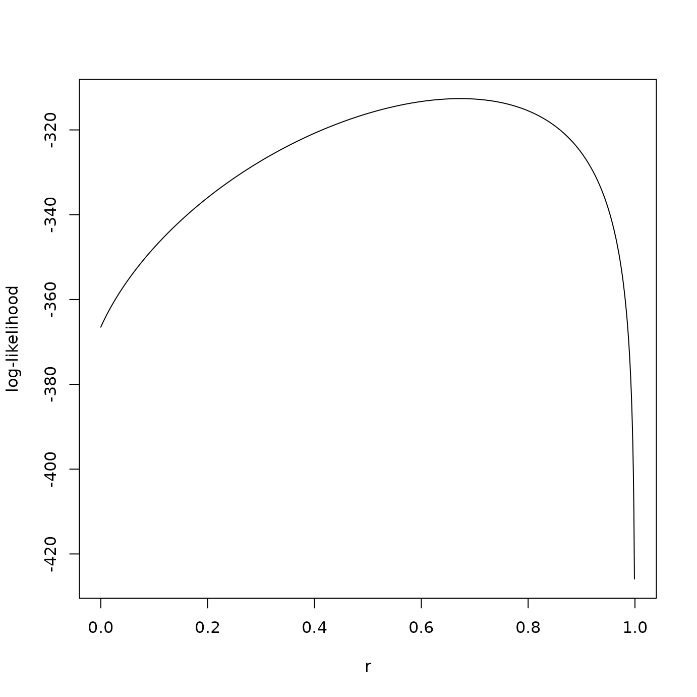

Provides estimates of relatedness between a pair of samples along with an optional support curve and inference.
Usage
ibdPair(
pair,
coi,
afreq,
M,
rhat = TRUE,
pval = FALSE,
confreg = FALSE,
llik = FALSE,
maxllik = FALSE,
rnull = 0,
alpha = 0.05,
equalr = FALSE,
mnewton = NULL,
freqlog = FALSE,
nr = 1000,
reval = NULL,
tol = NULL,
logr = NULL,
neval = NULL,
inull = NULL,
nloc = NULL
)Arguments
- pair
a list of length two containing data for a pair of samples.
- coi
a vector containing complexity of infection for each sample.
- afreq
a list of allele frequencies. Each element of the list corresponds to a locus.
- M
the number of related pairs of strains.
- rhat, pval, confreg, llik, maxllik
logical values specifying if relatedness estimate, p-value, confidence region, log-likelihood for a range of \(r\) values, and maximum log-likelihood should be returned.
- rnull
a null value of relatedness parameter for hypothesis testing (needed if
pval = TRUE).- alpha
significance level for a 1 - α confidence region.
- equalr
a logical value. If
TRUE, the same level of relatedness is assumed for M pairs of strains (r1 = ... = rM).- mnewton
a logical value. If
TRUE, Newton's method, adapted for a bounded parameter space, will be used to find MLE. Ignored (set toFALSE) ifM > 1,confreg = TRUE, orllik = TRUE.- freqlog
a logical value indicating if
afreqis on the log scale.- nr
an integer specifying precision of the estimate: resolution of a grid of parameter values ([0, 1] divided into
nrequal intervals), over which the likelihood will be calculated. Ignored if non-nullrevalis provided.- reval
a matrix representing a grid of (r1, ..., rM) combinations, over which the likelihood will be calculated. Each column is a single combination.
- tol
tolerance for calculating an estimate if
mnewton = TRUE. Set to1/nrif not provided.- logr
a list as returned by
logRevalwith logs ofrevaland other quantities.- neval
the number of relatedness values/combinations to evaluate over.
- inull
an index of the value/column of
revalthat is closest tornull.- nloc
the number of loci.
Value
A named list if multiple output logical values are TRUE - or a
vector if only rhat = TRUE or llik = TRUE. Depending on
these logical values, the following quantities are included:
If
rhat = TRUE, a relatedness estimate (a vector of length 1 ifequalr = TRUEor of length M ifequalr = FALSE);If
pval = TRUE, a p-value;If
confreg = TRUE, relatedness parameter values from the gridrevalthat are within 1 - α confidence region;If
llik = TRUE, log-likelihood values for relatedness parameter grid (provided inrevalor determined bynr);If
maxllik = TRUE, maximum log-likelihood.
Details
Handling of irregular cases:
Allele with population frequency of 0 is present: locus is skipped (does not contribute any information).
Number of unique alleles at a locus is greater than COI: COI will be increased for that locus only.
Examples
coi <- getCOI(dsmp, lrank = 2)
afreq <- calcAfreq(dsmp, coi, tol = 1e-5)
# two samples
ipair <- c(21, 17)
pair <- dsmp[ipair]
coip <- coi[ipair]
M <- 2
res1 <- ibdPair(pair, coip, afreq, M = M, confreg = TRUE, alpha = 0.05,
equalr = FALSE, reval = revals[[M]])
res2 <- ibdPair(pair, coip, afreq, M = M, llik = TRUE,
equalr = TRUE, reval = revals[[1]])
res1$rhat
#> [1] 0.31 1.00
rep(res2$rhat, M)
#> [1] 0.673 0.673
# plot confidence region
creg <- cbind(res1$confreg, res1$confreg[2:1, ])
plot(creg[1, ], creg[2, ], xlim = c(0, 1), ylim = c(0, 1), pch = 15,
cex = 0.6, col = "cadetblue3", xlab = expression(hat(r)[1]),
ylab = expression(hat(r)[2]))
points(res1$rhat, rev(res1$rhat), pch = 16)
# plot log-likelihood
plot(revals[[1]], res2$llik, type = "l", xlab = "r", ylab = "log-likelihood")

ipair <- c(41, 50)
pair <- dsmp[ipair]
coip <- coi[ipair]
# rtotal at different values of M with and without equality constraint
Mmax <- min(coip)
for (M in 1:Mmax) {
print(paste0("M = ", M))
print(c(sum(ibdPair(pair, coip, afreq, M = M, pval = FALSE,
equalr = FALSE, reval = revals[[M]])),
ibdPair(pair, coip, afreq, M = M, pval = FALSE, equalr = TRUE)*M))
cat("\n")
}
#> [1] "M = 1"
#> [1] 0.2794297 0.2794297
#>
#> [1] "M = 2"
#> [1] 0.320 0.316
#>
#> [1] "M = 3"
#> [1] 0.330 0.327
#>
#> [1] "M = 4"
#> [1] 0.360 0.332
#>
# M = 1
# log-likelihood for specific r values
ibdPair(pair, coip, afreq, M = 1, rhat = FALSE, pval = FALSE, llik = TRUE,
reval = c(0, 0.15, 0.38, 1))
#> [1] -480.7956 -480.2514 -480.1957 -Inf
# grid vs Newton's method
system.time(
ibdPair(pair, coip, afreq, M = 1, mnewton = TRUE, tol = 1e-5))
#> user system elapsed
#> 0.002 0.000 0.002
system.time(
ibdPair(pair, coip, afreq, M = 1, mnewton = FALSE, nr = 1e5))
#> user system elapsed
#> 0.130 0.012 0.142